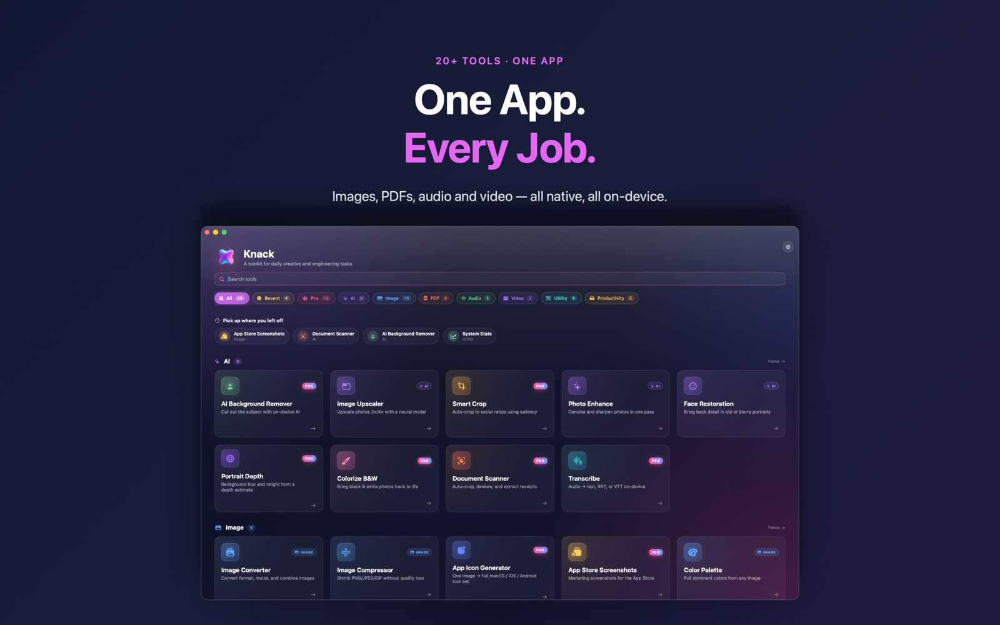

iPhone photos arrive as HEIC, and half the web still wants JPG. Knack converts a whole folder at once — on your Mac, nothing uploaded.

Yes. Image Converter is one of Knack's free tools, with no limits on how many files you convert.
No. Conversion runs entirely on your Mac using Apple's own image frameworks.
Yes. Turn on Knack's Finder actions in Settings, then right-click any image and choose Convert Image in Knack.
Image Converter is one of more than twenty native tools in Knack — converters, PDF tools, OCR, AI photo tools and more, all running on your Mac.
Get Knack